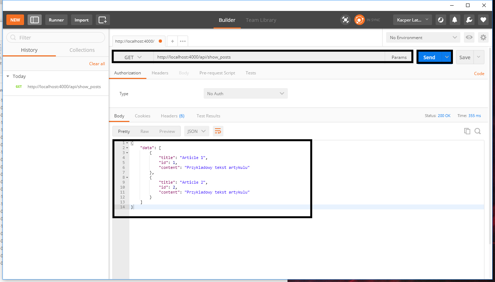
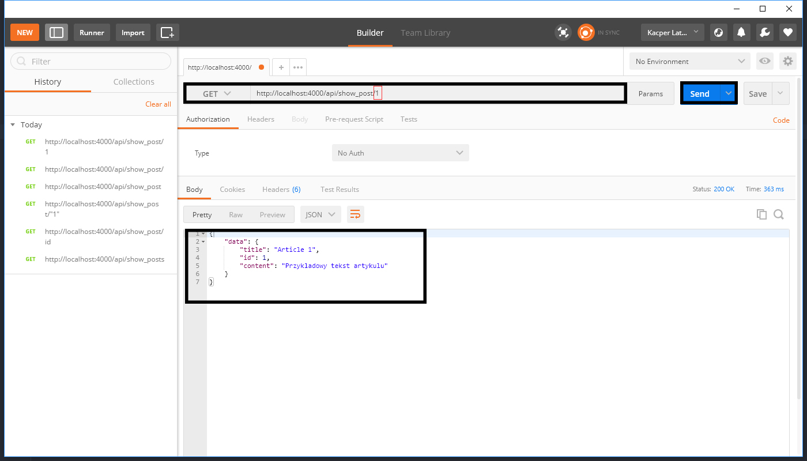
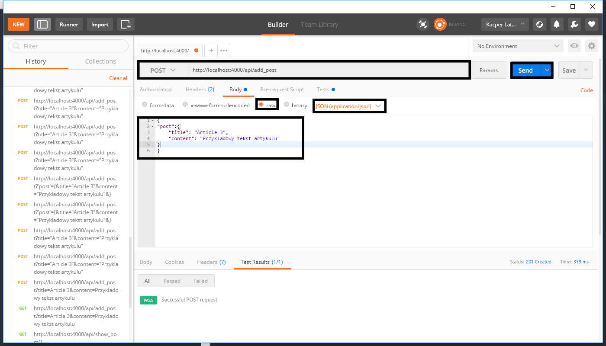
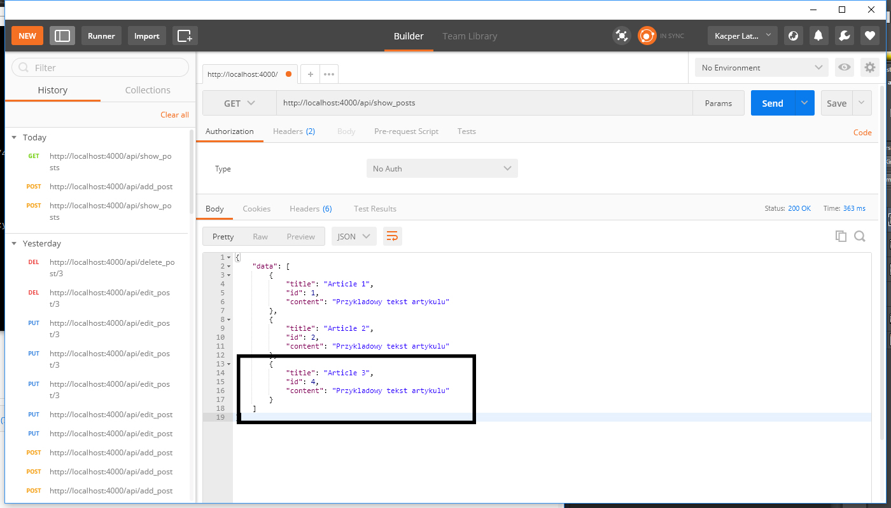
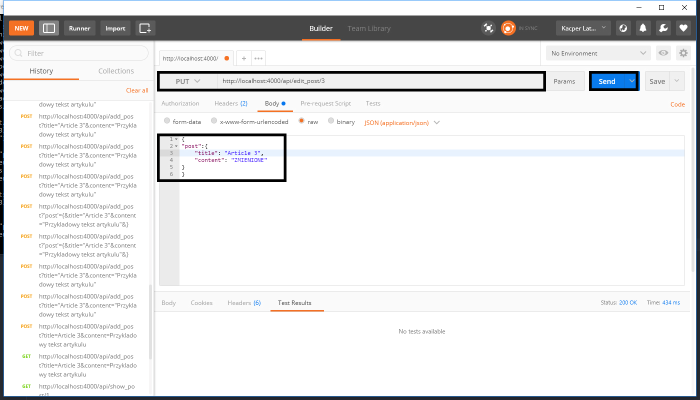
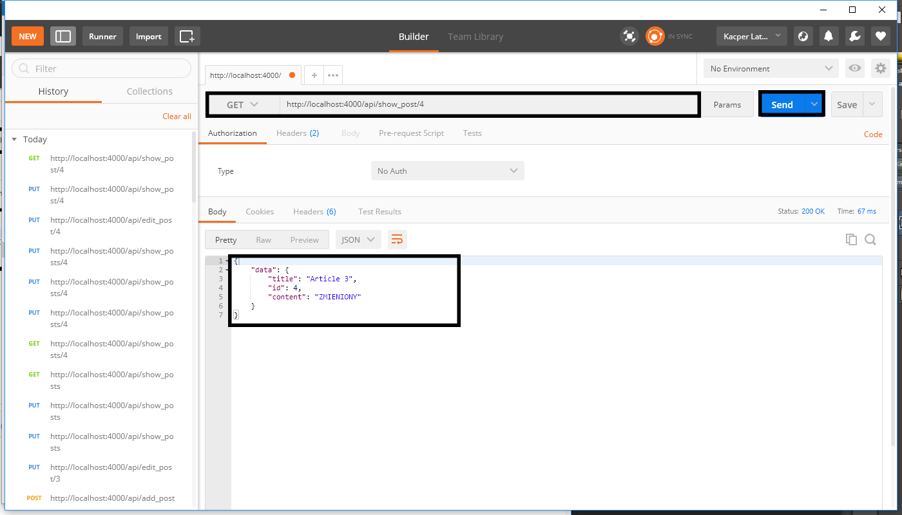
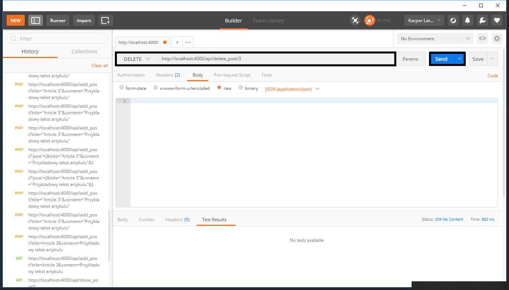

Cześć koderzy. Mam na imię Kacper i kocham to od czego tak naprawdę nasz użytkownik jest najbardziej oddalony. Wiesz już co mam na myśli? Czytając ten artykuł pewnie również podobnie myślisz. Tak chodzi o backend oraz bazy danych. Z tych zagadnień będę właśnie pisał teksty, również czasem poruszę temat rozwoju osobistego. Artykuł dedykuję osobom, które chcą zacząć pisać API w Phoenix, ale nie wiedzą co, gdzie ugryźć. Nie przejmujcie spróbuje wam wszystko dokładnie po kolei rozpisać, ponieważ każdy musi kiedyś zacząć, a wiem że wiele artykułów nie skupia się na najprostszych rzeczach, które osobie zaczynającej mogą czasami ucieknąć.
Zajmiemy się tworzeniem prostego API w funkcyjnym języku Elixir z wykorzystaniem frameworka Phoenix w wersji 1.3 i przy okazji nauczę was testować API z wykorzystaniem narzędzia Postman.
Tworzymy API
Zaczynamy od stworzenia naszego projektu komendą:
phx.new blog --no-html --no-brunch
Jeżeli już wygenerowaliśmy API, przechodzimy do pliku config/dev.exs i konfigurujemy naszą bazę:
config :blog, Blog.Repo,
adapter: Ecto.Adapters.Postgres,
username: "your_username",
password: "your_password",
database: "blog_dev",
hostname: "your_hostname",
pool_size: 10
Po wykonaniu tej czynności wywołujemy następującą komendę:
mix ecto.create
Teraz wygenerujemy schemat postów:
mix phx.gen.json Posts Post posts title:string content:string
Teraz musimy dodać do routera (blog_web/router.ex) nasze endpointy:
scope "/api", BlogWeb do
pipe_through :api
get "/show_posts", PostController, :index
get "/show_post", PostController, :show
post "/add_post", PostController, :create
put "/edit_post", PostController, :edit
delete "/delete_post", PostController, :delete
end
Po tym wykonujemy komendę:
mix ecto.migrate
Oraz odpalamy serwer:
mix phx.server
Teraz sprawdzimy czy działa nasze API, poprzez dodanie postów z poziomu konsoli Elixira:
alias Blog.Posts.Post
alias Repo
#post1
changeset = Post.changeset(%Post{}, %{title: "Article 1", content: "Przykladowy tekst artykulu"})
{:error, changeset} = Repo.insert(changeset)
#post2
changeset = Post.changeset(%Post{}, %{title: "Article 2", content: "Przykladowy tekst artykulu"})
{:error, changeset} = Repo.insert(changeset)
Teraz aby przetestować czy nasze API działa poprawnie użyjemy narzędzia Postman można go użyć w wersji desktopowej lub w wersji dodatku do przeglądarki chrome:
Test GET .../api/show_posts
Wybieramy methode GET, wpisujemy nasz url do show_posts (.../api/show_posts) i klikamy send. Jeżeli wszystko dobrze wykonaliście powinny wam się wyświetlić dwa artykuły.

Test GET .../api/show_post/id
Wybieramy methode GET, wpisujemy nasz url do show_post (.../api/show_post/id) i klikamy send. Jeżeli wszystko dobrze wykonaliście powinny wam się wyświetlić dwa artykuły.

Test POST .../api/add_post
Wybieramy methode POST, wpisujemy nasz url do add_post (.../api/add_post) w tym przypadku musimy zdefiniować obiekt jaki wyślemy, więc wybieramy body, zaznaczamy opcję raw i musimy wybrac JSON(application/json). Teraz musimy utworzyć nasz obiekt.
{
"post": {
"title": "Article 3",
"content": "Przykladowy tekst artykulu"
}
}

Teraz możemy sprawdzić czy wszystko działa wykorzystując wcześniej poznaną metodę GET, pobieramy listę wszystkich artykułów (.../api/show_posts).

Jeżeli wszystko dobrze wykonaliście powiniem wam się wyświetlić nowy 3 artykuł.
Test PUT .../api/edit_post/id
Wybieramy methode PUT, wpisujemy nasz url do add_post (.../api/edit_post/id) w tym przypadku musimy ponownie zdefiniować obiekt jaki wyślemy w zamian za stary, więc wybieramy body, zaznaczamy opcję raw i musimy wybrac JSON(application/json). Teraz musimy utworzyć nasz zmieniony obiekt.
{
"post": {
"title": "Article 3",
"content": "ZMIENIONY"
}
}


Test DELETE .../api/delete_post/id
Wybieramy methode PUT, wpisujemy nasz url do add_post (.../api/delete_post/id).

Mam nadzieję, że podobał wam się ten dość krótki artykuł na temat Phoenix. W razie trudności lub niejasności proszę pisać w komentarzach.
Get the latest posts delivered right to your inbox.